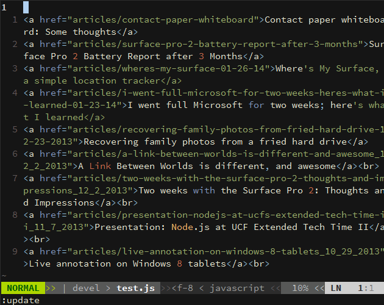

A long time ago...
{kind=link}
Buckling spring

Dark Ages (90's+)
Return of the Cherry MX (2010+)
- Market: coders, esports players wanting non-crap keyboards
- Result: expensive keyboards using Cherry MX switches
Cherry MX


The Clones

- Cherry MX was patented - until recently
- Clones of variable quality now exist
- More diversity; not always exact clones
- Lower prices or... higher margins
... avoid Kailh/Razer and you'll be fine
The Others

- ALPS
- Topre (magnetic)
- Frankensteins (MX Ergo Clear, Ghetto Green, etc.)
- Custom-designed switches
Why mechanical?
- Durable/maintainable; one keyboard for life
- Less hand strain, more predictable/consistent actuation force
- Different switches for different uses/people
- tactile feedback (e.g. MX Blues) for fast, shallow typing
- linear low resistance (e.g. MX Reds) for FPS gaming
- Hackability, with a community/market of makers/components
Custom keyboards: easy (change your keys)
http://www.maxkeyboard.com/max-nighthawk-104-key-custom-mechanical-keyboard.html

Custom keyboards: medium (open source designs)
ErgoDox and derived designs, UHK, etc.


Pre-built: http://falbatech.pl, http://uniquekeyboard.com/store/split-keyboard/diverge-ii
Custom keyboards: hard
- Do the AVR thing
- Design your layout
- Make your PCB (if you need one)
- Buy some switches (or design+make them for very hard)
- Buy/print your keykaps
- Print your case

Choosing a Keyboard

Consult the Experts
Switch
Guide: http://i.imgur.com/cZkte.png
{kind=link}
| Switch | Tactile | Click | Force (cN) | Gaming* | Typing* | Universal* |
|---|---|---|---|---|---|---|
| MX Red | No | No | 45 | 8.76 | 7.17 | 7.73 |
| MX Black | No | No | 60 | 8.23 | 6.64 | 7.19 |
| MX Brown | Yes | No | 45 | 8.38 | 8.31 | 8.42 |
| MX Blue | Yes | Yes | 50 | 7.66 | 8.94 | 8.11 |
| Topre 35g | Yes | No | 35 | 8.16 | 6.45 | 5.15 |
| Topre 45g | Yes | No | 45 | 8.12 | 8.61 | 7.67 |
| Model M | Yes | Yes | 65 | 7.56 | 9.11 | 7.99 |
| Gateron Brown | No | No | 35 | 8.67 | 8.50 | 8.50** |
| Gateron Clear | No | No | 35 | 8.50 | 7.75 | 7.75 |
| Kailh $COLOR | Bad | Bad | Bad | 5-7 | 5-6 | 5-7 |
* : Ratings from https://mechanicalkeyboards.com/mechanical_switches.php
** : Only 4 reviews
O-rings
Helps prevent death by coworker's shotgun
Guide: http://i.imgur.com/FdUlT.png
{kind=link}

Size/shape

- Full: 3D authoring
- 80%/Tenkeyless: Less keyboard/mouse distance

- 75%: Perfect?
- 60%: Show off my Pok3r
- 40%: True Masochist
- ErgoDox/Kinesis/etc: Who gives a shit

Keyboard
PCB or plate mounted?
6KRO? NKRO? (how many keys can I press at once?)
Keycap plastic/quality?
Extras
Backlight ? RGB ? Programmable ?
DIY Possibility: mode-dependent individual key backlighting in Vim
USB hub?
Macro keys?
Fully programmable layout? Memory? Layout switching?
Cable management?
USB hub?
... Ruler?
Hints
- Take your time, keyboard for life deserves days of your time
- Price != quality
- Nice features != good keyboard
- Google for issues with
$KEYBOARD - Don't buy marketing bullshit, buy parameters/reviews
- Read/ask on Reddit/forums/etc.
Googlable brands
WASD


Royal Kludge

Das Keyboard

Rosewill
Razer
(over there)
Topre
Unicomp
Cherry

KUL

Ducky

Leopold
KeyCool
Tesoro

Filco
CoolerMaster

KBTalking

Noppoo
Deck

Matias

Tex

Vortex
Happy Hacking
KBParadise
Kinesis
Maltron
The Ergonomic Keyboard (super crap)
ErgoDox

DIY
DIY
DIY
Keyboard UIs
Mouse sucks
Need to move hand between keyboard and mouse all the time
over the numpad, if using a crappy keyboard
Excessive mouse usage will fuck up your hand
Moving hand to mouse - moving mouse to target - moving hand back is just slow
(e.g. selection with copy-pasting)
I can type a bunch of text in the meanwhile
On notebooks: excessive touchpad use will fuck up your hand much faster
Ed, Ex, Vi
Ed, Ex: ancient history, 'editing languages' rather than 'text editors'
as we know them today
Vi: major 'text editor' on Unix in 80's
Vim: "Vi Improved", in development, with major user community, new plugins every day
NeoVim: Modern attempt to refactor Vim, with some traction
Vim from a 'basic user' view
I want to edit this text
WTF why is text not changing
WTF why did I just delete/move half of my text
(finds insert mode)
yeah... this is Notepad with weird clunky features
(hjkl? WTF?)
(what's with the weird shortcuts?)
... recommends people to press 'i' and use it like crappy Notepad
Vim - what it really is
A text editor built around a text editing language.
Those are not shortcuts. language.
Use the language to move around & edit text from normal mode
Only entering insert mode exacly for the duration of a micro-edit
Macros, and the
Ed/ExlanguageE.g: select all matches of a regex in file, and run a from all of these

No GUI wasting screen space; edit 3 files side by side
And daily plugins trying out experimental features
Features of Visual Studio 2025, today (EasyMotion, UltiSnips, Suround, Gundo...)
Vim language examples
| ib | in parentheses () |
| ab | around parentheses (including them) |
| vib | select in parentheses |
| cib | change in parentheses (rewrite content) |
| 2cib | change in 2 levels of parentheses |
| da" | delete around double quotes, including the quotes |
| dit | delete in (between) HTML/XML tags |
| gUe | go UPPERCASE to the end of word |
| gUib | go UPPERCASE in parentheses |
| gUt- | go UPPERCASE till - |
no mouse required
cib vs mouse select:
- press c vs (move hand to mouse/touchpad)
- press i vs (drag mouse (touchpad) from paren to paren)
- press b vs (press backspace)
Vim language; GIFs


Vim: the life of improvement
Vim has mappings, scripting and ever-appearing plugins
- Find repeating usage patterns, input redundancies
- Turn patterns into mappings, possibly functions, or find plugins
- Less typing/work/strain from now on
- Repeat
Result: a truly integrated development environment, adapted exactly to the needs of the user
One Vim user may not be able to use another user's Vim
Vim's children
- IDE plugins - these usually miss the 'language' part, and do only 'HJKL'
- Browser plugins
- PDF viewers
- File managers
- Window Managers
- Shell vim-like bindings
- Even games
Browser plugins
Firefox: Vimperator/Pendatactyl, VimFX
Pentadactyl allows the 'life of improvement' through mappings, etc.
Chrome: Vimium
Also vim-like browsers
(VimFX Demo - move around, open link, go back, mass open links, search)
Shell
Vi mode in Bash
Normal mode:
move around the command line quickly, changing/replacing words, no mouse
(demo)
Window Managers
- Awesome, RatPoison, i3...
- Even KDE
(demo)
And many others
- Zathura (PDF viewing)
- cmus (music)
- ranger (file manager)
- blender (3D creation)
Games
- Grey Goo
Bindings really matter here (Progaming/esports games)
(TODO)